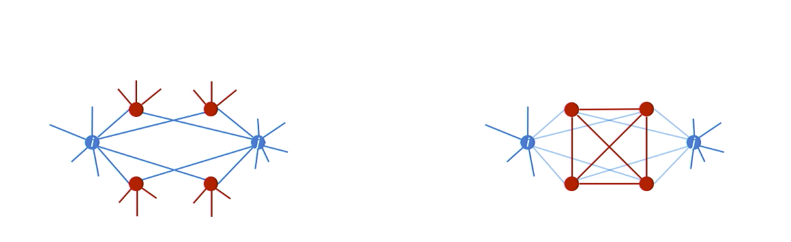
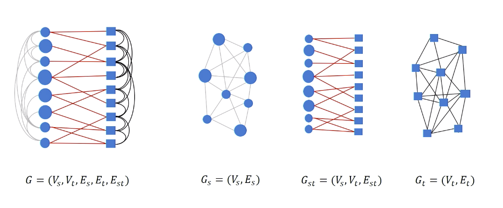
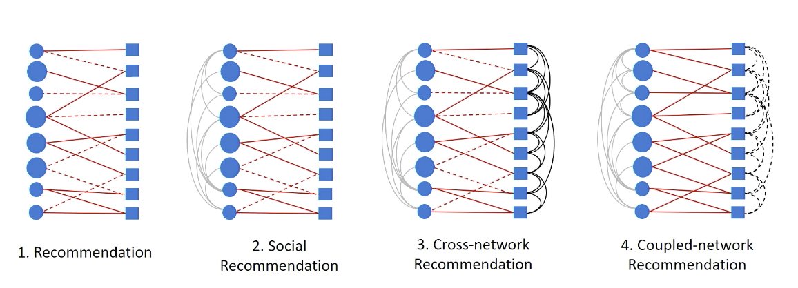
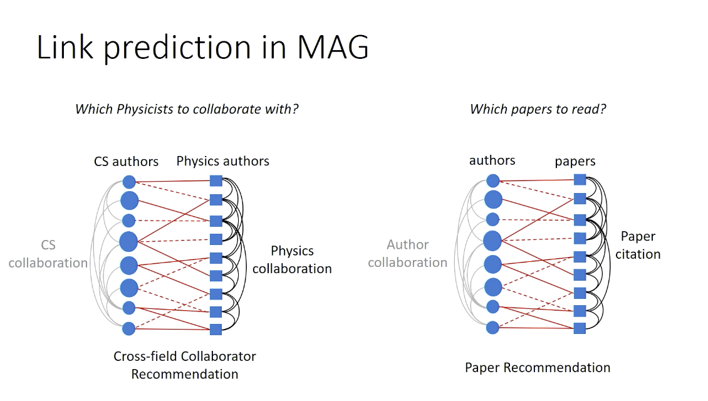

Part1. Introduction and Overview
Part2. Graph Properties and Applications
1. Graph Basics
Degree
Degree in Microsoft Academic Graph(MAG):
Author collaboration graph(undirected graph)
Degree represents the number of collaborators each author has.
Paper citation graph(directed graph)
In-degree represents the number of citations each paper collects.
Out-degree represents the number of references each paper covers.
- Institution collaboration graph
- Institution citation graph
- Field-of-study citation graph
- Venue citation graph
Degree centrality: measure the importance of nodes.
1) clustering coefficient centrality: ( if two nodes has same same degree centrality.)
Definition: The ratio of (number of closed triangle formed by the node and its neighbors) + (number of all possible triangles formed)
2) Neighborhood connectivity: (if two nodes has same clustering coefficient centrality. )
Definition: average degree of one’s neighbors
3) Eigenvector centrality: (to avoid repeat iteratively in 2, only works for undirected graph).
Definition: each node’s centrality is the sum of the centrality values of the nodes that it is connected to.
4) PageRank centrality: works for directed graph, takes link direction and weight into account.
5) HITS centrality(hyperlink-induced topic search algorithm):
Early days web pages: Hubness(中心) centrality scores + Authority centrality
Graph theory
Graphicality realization: A finite sequence of non-negative integer d is graphical if a simple graph G can be constructed with its degree sequence as d; The graph G is one of d’s graphical realization.
How can we tell whether a sequence is graphical?
If one sequence is graphical, how can we have its graphical realization?Graph isomorphism
Fractals and scaling
Why can’t we keep growing in body size and weight?
Why can’t we live for 1000 years, but ~100 years?
Why can’t we sleep for 1 hour or 23 hours per day?
2. Graph Applications
a. Node label classification
Social networking sites may try to infer unknown user’s demographic information.
Such problem is formulized into a data mining task, such as classification(e.g user’s gender) and regression(e.g user’s age).
Application: Demographic prediction in social networks
Node label classification in MAG:
- For each paper in a AG, infer its fiels of study from collaboration/citation network structure.
(By leveraging the autor collaboration and the paper citation graph.)
b. Community detection
The community detection is referred to as the node clustering task in the context of data mining or machine learning.
Community in graph: one set of nodes that can be grouped together.(exist very dense connections between this group of nodes)
How do we detect communities?
transform the community detection problem as a node clustering.
How do you split nodes into multiple groups?(best choice)
minimize number of connections between two communities and at the same time maximize numbers of connections within each community.
Graph laplacian matrixL = D - A
D: degree matrix
A: adjacency matrix
L is Positive semidefinite
L’s Eigenvalues are non-negative
L’s Eigenvectors are real & orthogonal
More than two communities?
How to determine the number of clusters K?
How to partition a graph into k clusters?
c. Link prediction
Given two nodes are not connected right now, aim to infer whether a link will form between them.
- Friend recommendation, e.g, “People you know”, “Who to follow”
- Item recommendation, e.g, movies to watch on netflix, books to buy in Amazon
=> most effective way to predict is to measure the structural similarity between these two nodes.
Similarity in networks
The intersection of two’s neighbors over the union of their neighbors.
- Structural diversity of common neighbors
In which case is more likely for node i and j to connect?
- Facebook: more likely for right case, two people with four connected common friends to link with each other.
- LinkedIn: more likely for left case, when they have a diverse set of common neighbors.
Structural similarity in MAG
- #common-coauthors of two author collaboration graphs.
- #cocitations of two papers in citation graphs.
d. Heterogeneous link prediction problem

Break the heterogeneous graph into three subgraphs: circle graph, square graph, bipartite graph.

Case example:
- Netflix: Users(circle nodes),
movies(square nodes),
goal: infer red links(whether user want to watch the movie on the right) - Social networks: exist social relationships to incorporated into the recommendation system.
- MAG
- Mobile communication network: AT&T users(circle nodes),
T-Mobile users(square nodes),
links(communication relationships between them)
goal for AT&T: infer the communication relationships between any pairs of T-Mobile users.

Ref: From Graph to Knowledge Graph – Algorithms and Applications